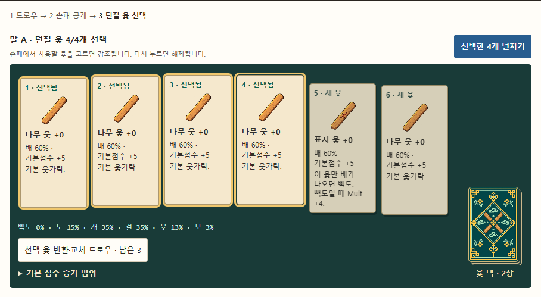
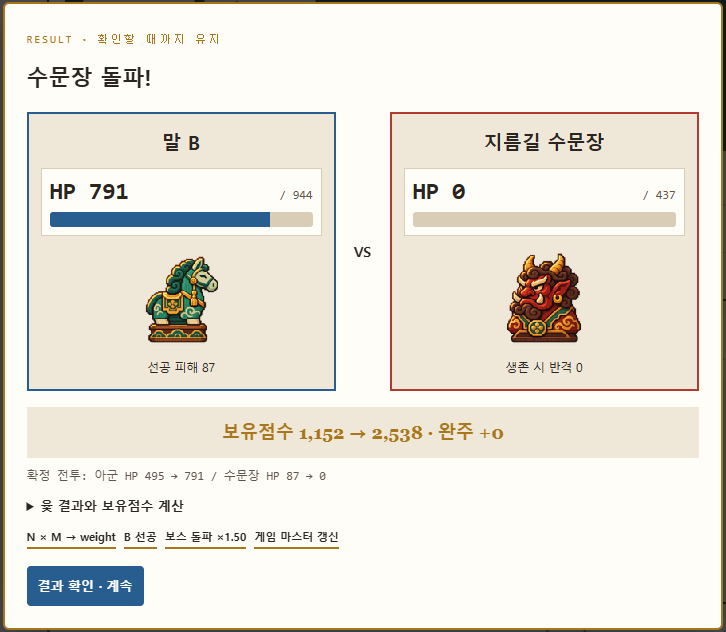

9빌드 재료와 특성 카드
기본 윷·특성·상점 가격과 확률은 조정용 초깃값이다. 덱 특성은 슬롯 3개, 말 특성은 말마다 슬롯 2개로 시작한다.
윷가락
재질 시너지
부적
박싱은 까치·거북·복주머니를 제공한다. 나머지는 후속 콘텐츠다.
덱·말 특성
리스크·리턴 선택지
보스
시작 덱
마스터의 판 전체 특성과 특수칸
후속 막 증강
별도 막 증강 선택은 이번 박싱 범위 밖이다. 우선 덱 특성 카드 구매·강화로 런 성장을 확인한다.
선택형 첫 3턴 체험 또는 기본값으로 바로 시작 → 실제 3막 9라운드 코어 루프. 덱 특성 → 리스크 선택 → 출전 윷 편집 → 투척·업기·보스 전투 → 완주 정산 → 라운드 결과 → 상점 / 추가 이자.
게임 데이터를 불러오는 중입니다. 실패하면 아래 문서의 데이터 선택 도구에서 game-data.json을 선택하세요.
편집 모드는 기본 weight·HP·공격과 추가 배율만 입력합니다. 현재 HP·최대 HP·공격은 공통 계산 결과이며 적용 예정 수치를 먼저 보여줍니다. 업기 체험에서 던질 윷 네 개를 고른 뒤 둘째 턴에 지름길로 가면 중앙 수문장과 싸울 수 있습니다.
업고, 곱하고, 돌파한다. 윷으로 키우는 로그라이크 덱빌딩
game-data.json에서 읽어 그리며, 플레이테스트 전 초깃값입니다. 확정한 결정은 18장에 모았습니다.
file://)에서 JSON 읽기를 막았습니다.
이 폴더에서 python -m http.server를 실행한 뒤 http://localhost:8000으로 열거나, 아래에서 game-data.json을 직접 고르세요.
윷토체스 — 업고, 곱하고, 돌파한다. 윷을 고르고 말을 키워 두 보스를 돌파하는 로그라이크 덱빌딩 보드 게임.
| 항목 | 설계 |
|---|---|
| 기반 | 윷놀이의 도·개·걸·윷·모와 업기, 발라트로식 N × M 빌드. SRPG의 플레이어/적 턴과 발견 → 추적 → 접촉 전투를 적용한다. 일반 보스는 랜덤 윷을 쓴다. |
| 런 | 3막 9라운드, 라운드 3~4분·약 30분 목표. 실제 지속 시간은 미측정. |
| 승리 | 완주 정산 점수 ≥ 목표. 미완주 weight는 참고용 잠재 점수이며 승리 판정에 직접 더하지 않는다. |
| 보스 | 지름길 C·완주 관문 G 수문장 2체 유지. 초기 리스크 픽이 일반 보스 수·HP·공격·기믹을 추가로 바꾼다. |
| 실행 | 현재 HTML 박싱과 장면 편집기. Python/pico2d 구현은 별도. |
이번 개정은 초기 HP=weight 완전 통합안 대신, weight 점수 폭발과 HP·공격 폭발을 분리하고 weight 계수로 연동하라는 최신 결정을 따른다.
| 레퍼런스 | 가져올 문법 | 윷토체스 적용 |
|---|---|---|
| 발라트로 | 라운드 목표, 점수를 키우는 카드 조합, 제한된 슬롯과 상점 선택 | N·M에 더하기와 곱하기 효과를 누적한다. 시작 덱의 효과는 특성 카드로 주고 구매·강화·삭제로 편집한다. |
| 윷놀이 | 확률을 갖는 투척, 업기, 지름길, 완주 | 진행할 말과 윷은 투척 전에 바꿀 수 있다. 투척 뒤 결과는 하나로 확정하고 바로 이동하며 실제 갈림길에서만 길을 고른다. 작은 말도 큰 말의 지원 배율이 된다. |
| 파이어 엠블렘 | 칸 이동 뒤 전투 예측과 공격·반격의 순서 | 플레이어는 도착 칸에서 선공하며 일반 보스는 적 턴의 접촉 시 선공한다. 투척 후 아군·보스 HP 전후값, 공격·반격과 사망 여부를 보여주고 전투를 확정한다. |
발라트로의 상점·점수 효과는 공식 FAQ, 격자 기반 턴제 전투와 지원·반격은 Nintendo 공식 전투 소개를 참고했다. 위 수식·보스/마스터 배치·8개 출전 규칙은 윷토체스의 설계안이다.
무기 상성표·직업·대규모 부대·별도 전술 지도·명중률·숨은 치명타는 이번 박싱에 추가하지 않는다. 랜덤성의 중심은 윷과 주어지는 빌드 재료다.
발라트로 점수 예측에 관한 글은 계산 편의와 결과 확인의 긴장감이 충돌한다는 해석을 제시한다. GMTK 영상은 제목·외부 전사 일부, ThatGuyGlen 영상은 제작자 설명을 확인했고 직접 시청은 하지 않았다.
현재 합계·필요 점수와 전투 HP/피해는 공개한다. 미래 weight·정산 상세는 펼쳐서 보며, N × M 결과의 공개 연출을 남긴다. 말 RPG·마스터는 윷·업기·배율을 돕는 보조 수단이다. 접힌 상세 표시만으로 재미 문제가 해결됐다고 단정하지 않는다.
주어진 손패에서 확률과 발동 면을 골라 통제한다. 결과 자체는 윷의 앞뒤 난수로 정해진다.
N × M, 덱 특성, 작은 말 지원, 보스 처치 배율을 연결한다. 점수 폭발과 HP·공격 폭발을 구분해 읽는다.
보스 수치·위치·전투 결과를 공개한다. 점수를 더 키울지 완주로 확정할지 선택한다.
| 3·3·3 기준 | 설계 장치 | 사용자 확인 방법 |
|---|---|---|
| 3초 안에 게임명 기억 | 첫 화면과 결과 카드에 큰 제목 ‘윷토체스’, 한 문장 ‘업고, 곱하고, 돌파한다’, 윷·말·보스의 시각 구분을 반복한다. | 3초 노출 뒤 화면을 가리고 이름을 회상하게 한다. |
| 30분 플레이 지속 | 3막 9라운드. 매 라운드 리스크 선택·출전 윷 편집, 매 승리 뒤 상점·말 성장 또는 상점을 건너뛰는 추가 이자 선택. 앞선 빌드가 다음 목표와 두 보스에 대응한다. | 자발적 세션 길이·막별 이탈·조작 피로를 기록한다. 강제 대기나 시간을 늘리는 연출로 맞추지 않는다. |
| 종료 3시간 내 다시 떠오름 | 결과에 최대 N·M·X, 큰 피해, 강해진 말과 덱 카드, 동일 시드를 남겨 재도전할 이유를 만든다. | 3시간 이내에 유도 없이 이름·기억나는 폭발·다시 해볼 빌드를 회상하는지 확인한다. |
3·3·3은 사용자가 제공한 설계 기준이며 달성 보장이 아니다. 숫자를 표시하거나 기록을 저장한 사실만으로 기억·몰입을 검증했다고 보고하지 않는다.
| 통제·예측 가능 | 통제 불가능한 재료 | 연결 |
|---|---|---|
| 보스 현재 위치·시야·능력치·교전 선택, 던질 윷, 움직일 말, 업기, 제시된 라운드 중 선택, 다음 기본 목표, 보유 재화·이자 | 리스크 선택지의 추첨, 덱에서 뽑히는 윷, 플레이어/보스 윷의 면, 상점 상품과 강화 성공 | 확률·가격·피해·다음 목표를 공개한다. 투척 뒤에는 실제 갈림길만 선택하며 구매·리스크는 해당 단계에서 판단한다. 미리보기는 난수를 소비하지 않는다. |
메뉴 아래에 선택형 ‘전체 요소 체험 · 장면 선택(기본 업기는 첫 3턴 고정)’을 배치한다. 바로 시작은 기본 덱·정석·8개 윷으로 즉시 출전한다. 다른 시작 설정에서는 정석·안전·질주를 고를 수 있다. 첫 라운드는 보너스·회복 2칸, 고요한 판으로 시작한다. 둘째 라운드부터 작은 디메리트와 이동·공격 보상을 소개한다. 세부 수식·잠재 점수·상점 세부 성장·미래 배치·편집기는 접어 두되, 현재 위험·피해 예측은 공개한다.
메뉴·덱 효과 선택 → 리스크/리턴 3택 1 → 출전 윷 편집 → PvE → 라운드 결과 → 다음으로 → 상점 입장 / 추가 이자 → 다음 리스크 선택
기존 코어 루프 플로우차트의 메뉴·라운드·보상·덱빌딩 순서를 유지한다. 윷 편집은 매 라운드 출전 직전에 둔다. 바로 시작은 첫 출전 설정을 기본값으로 확정하며 이후 라운드 선택·편집은 유지한다. 3막 마지막 라운드 뒤에는 런 결과와 재시작으로 이어진다.
각 윷의 배 확률과 발동 면을 개별 판정한다. 표시 윷만 배인 경우는 빽도다. 윷·모는 추가 투척을 준다. 아래 HP·공격 배율은 해당 말을 다음에 움직일 때 새 결과로 바뀌며, 최대 HP 감소 시 현재 HP도 상한까지만 유지한다.
매 라운드 지름길 C와 완주 직전 G에 특수 수문장 2체가 있다. 픽과 라운드가 일반 보스 0~3체를 추가한다. 지름길 수문장은 지원 묶음의 선공을 강화하고 완주 수문장은 절반 HP 이하 반격이 강해진다. 지름길 보스는 최종 도착 칸이 일치할 때만 교전한다. 옆 칸·경유 칸에서는 전투하지 않는다. G는 모든 완주 경로의 정지 관문이며 격파 후 완주한다. 같은 보스 칸에서 생존한 말은 다음 투척으로 재공격하거나 아군의 업기 지원을 받을 수 있다.
리스크 증가 시 보스 weight·기본 HP·공격 계수가 함께 오른다. 다음 행동은 선공 후 반격 1회로 고정하며 추격·범위 공격·자동 재등장은 없다.
정산 점수가 목표 이상이면 즉시 보상 단계로 간다. 목표 미달이고 투척이 0이거나 생존 미완주 말이 없으면 런 종료다. HP 0 또는 weight 0인 말은 라운드에서 사망하고 미정산 weight가 0이 된다. 이미 정산한 점수는 보존한다. 말 원형의 성장과 특성은 런 동안 유지하고 새 라운드에서는 원형으로 다시 출전한다.
| 부류 | 결정 | 상대 스케일 |
|---|---|---|
| 초기 리스크 선택 | 플레이어 픽 | 목표·보스 능력치·기믹·수·보상의 가장 큰 변화 |
| 구매 덱 카드 | 플레이어의 구매·편집 | 이익 중심, 재화·슬롯 기회비용 |
| 마스터의 판 전체 특성 | 마스터 정기 갱신 | 초기 픽보다 변화 폭은 작고 구매 카드보다 직접 디메리트는 큼 |
마스터는 기본 3턴마다 특수칸 위치·개수·종류와 판 전체 특성을 갱신한다. 칸에 최종 도착하면 메리트·디메리트를 준다. ‘핏값의 행군’은 턴말 생존 말·보스 weight -12 대신 말 이동 +1·공격 ×1.15다. 현재 효과와 다음 갱신 시점을 공개하며, 다음 배치는 펼쳐서 확인한다. 예측·확정은 같은 턴말 효과를 계산한다. 첫 라운드의 고요한 판은 학습 예외다.
외곽 20칸과 대각선을 정사각형으로 유지한다. 완주 수문장 바로 옆의 출발 0에서 1번 방향으로 출발한다. 외곽 또는 선택한 지름길로 코스를 돌아 귀환 J에 도달해야 아래 G로 진입한다. 출발 0과 귀환 J는 같은 위치를 쓰되 이동 상태를 구분한다. G 아래 END는 수직으로 잇는다. 이동 경로와 그림 연결을 분리해 모서리가 눌리는 현상을 막는다.
기본 보드에는 방향 화살표·도착 후보 원·칸 순번·강조 경로를 표시하지 않는다. 현재 위치는 기물 자체로 표시한다. 기물은 노드 중앙에 반경 20으로 놓아 일반/특수 노드(반경 11/17)를 덮되, 이웃 노드를 가리지 않는다. 전투 중에도 기물을 옆으로 밀지 않는다. 같은 물리 칸의 표시는 하나로 합치되 실제 말의 상태·업기 규칙은 바꾸지 않는다.
다음 칸 예측은 상단 토글로 열고 보드 옆 상단에서 후보 하나만 Previous / Next로 넘긴다. 후보 넘기기는 경로를 자동 표시하거나 이동하지 않는다. 다음 칸 선택지에 커서를 올린 동안만 굵은 파란색 점선 경로를 표시한다. 화살촉은 최종 도착 노드 앞에 하나만 두며 중간 노드의 화살표·순번·도착 원을 추가하지 않는다. 선택지에서 커서가 벗어나면 지운다. Tab으로 초점만 옮기거나 말을 선택하거나 자동 이동할 때는 화살표를 표시하지 않는다. 키보드·터치는 경로 보기 버튼을 명시적으로 실행하고, 이동 버튼으로 별도 확정한다. 보드 확대·칸 안내·입력 오작동 방지는 유지한다.
Mario Party 2 공식 설명서의 갈림길 방향 선택·지도 보기, Mario Party DS 공식 설명서의 전체 지도, Nintendo Superstars 안내의 방향 표지와 위험 카운터를 참고했다. 필요할 때만 표시하는 경로 미리보기는 이 원칙을 윷토체스에 적용한 설계이며, 원작의 동일 UI를 확인했다는 뜻은 아니다.
점수 축은 weight, 전투 축은 HP·공격이다. weight를 체력처럼 직접 소모하지 않고 계수로 연결한다.
4개 윷의 16가지 앞뒤 조합을 계산한다. 기본 N·M·윷 강화·재질 시너지 기준이며 실제 말의 업기·HP·전투·완주 효과는 게임의 투척 후 미리보기로 확인한다.
기본 기대 증가량 - W
윷·모 확률 -
기본 증가 구간 - W
기본 윷·특성·상점 가격과 확률은 조정용 초깃값이다. 덱 특성은 슬롯 3개, 말 특성은 말마다 슬롯 2개로 시작한다.
박싱은 까치·거북·복주머니를 제공한다. 나머지는 후속 콘텐츠다.
별도 막 증강 선택은 이번 박싱 범위 밖이다. 우선 덱 특성 카드 구매·강화로 런 성장을 확인한다.
라운드 3~4분, 전체 약 30분의 가설이다. 매 라운드 특수 수문장 2체와 픽의 일반 보스를 배치하고 막·라운드·선택한 위험도로 능력치를 키운다.
현재 화면에서 다음 라운드의 기본 목표를 미리 보여준다. 그다음 리스크 선택지의 추첨 결과는 아직 확정하지 않으며, 실제 목표는 선택한 특성 배율을 반영한다. 무한 모드는 후속 범위다.
현재 재화와 이번 잔액 기준 이자를 항상 표시한다. 보상 화면에서는 확정된 이자를 표시하고, 수령할 때 한 번만 지급한다. 박싱은 초과 600점마다 1냥을 초기값으로 둔다.
윷 상품 1칸, 덱 특성 1칸, 말 특성 또는 부적 1칸을 시드로 뽑는다. 어떤 상품을 살지, 돈을 남겨 이자를 받을지, 상품을 다시 뽑을지는 플레이어가 고른다.
상점 상단에는 현재 가진 금액과 다음 라운드 예상 이자만 둔다. 지난 투척 수식·정산/필요 점수 HUD는 결과 화면에서만 보여준다. 윷 구매·덱 편집은 특성 구매와 구역을 나눈다. 윷 강화·삭제·판매는 덱 편집 토글 안의 아래쪽, 말 강화·특성 삭제는 각 말 카드에 둔다. 말 특성 구매 버튼도 A~D 대상을 직접 표시한다.
라운드 결과에서 다음으로를 누르면 기본 보상·이번 이자를 한 번 받고 선택 화면으로 간다. 상점 선택 때만 상품을 뽑는다. 추가 이자는 상점을 건너뛰고 보상 수령 후 잔액 기준 이자를 추가 1회 받아 다음 라운드로 가는 선택이다. 마지막 라운드는 바로 런 결과로 간다.
보드 맨 오른쪽 아래의 청록색 덱을 누르면 새 카드만 뒷면을 보이며 한 장씩 손패로 들어온다. 사용하지 않은 윷은 앞면을 유지한다. 나무 윷과 붉은 X가 새겨진 표시 윷을 구별해 네 장을 고른다. 고른 카드는 그 자리에서 12px 올라가고 ‘선택됨’이 표시된다. 좁은 화면에서는 손패가 두 열로 접히고 마지막 줄 오른쪽에 덱이 놓인다.
카드를 받아 펼치고 들어 올리는 조작을 윷의 개별 확률과 업기 전투에 맞췄다. 발라트로 공식 게임 화면

기본 weight·HP·공격과 추가 HP/공격 배율만 입력한다. 고정 계수·윷/보스 자동 배율과 현재 HP·최대 HP·공격은 읽기 전용이다. 추가 배율은 윷 결과가 바뀌어도 유지된다. 적용 예정 표시와 실제 적용은 공통 retune/stats를 사용하며 받은 피해량을 보존한다. 보스 위험도는 기본값·weight와 중복 적용하지 않고 HP/공격 자동 배율에 각 1회 반영한다.
박싱은 확률 성공과 유지/하락을 적용한다. 파괴는 아직 적용하지 않는다. 확률·비용은 구매 전에 공개한다.
마우스로 윷·말·선택지를 고른다. 이동 후보는 마우스 호버 또는 키보드·터치의 경로 보기로 먼저 확인한다. 갈림길의 이동 버튼으로 확정하며 보드·버튼에 초점이 있으면 Space로 투척하지 않는다. 게임 영역에 포커스가 있을 때 1~6은 손패, Space는 투척, R은 교체다. 편집 중과 전투 연출 중에는 게임 입력을 잠근다.
| 상태 | 선택 | 전환 |
|---|---|---|
| MENU → TRAIT | 덱의 시작 효과와 주어진 리스크 3택 1 | PREP |
| PREP | 보유함에서 출전 윷 편집 | DRAW |
| DRAW | 드로우 더미·유지 손패 확인 후 부족분 드로우 | REVEAL |
| REVEAL | 덱에서 손패로 이동하는 뒷면 모션 후 공개 | SELECT |
| SELECT | 하단 손패에서 직접 4개 선택. 강조+12px 올림. 자동 선택 없음 | 투척 후 사용 윷 반환·셔플 → MOVE |
| MOVE | 실제 갈림길만 경로 선택·나머지는 자동 이동 | HP 박스·타격 연출·결과 확인 → 다음 턴/REWARD/LOSE |
| REWARD | 라운드 결과·초과 점수·보상 내역 → 다음으로 | 보상 1회 지급 → CHOICE (마지막은 WIN) |
| CHOICE | 상점 입장 / 상점 건너뛰고 추가 이자 1회 | SHOP / 다음 TRAIT |
| SHOP | 윷·덱과 특성 영역 분리, 각 말 카드에서 강화 | 다음 TRAIT |
| 파일/객체 | 책임 |
|---|---|
| boxing-core.js | 시드 난수, 손패 반환·셔플, 리스크/상점 추첨, 성장 수식, 순수 이동·전투 예측, 같은 결과 확정, 상점·메타 성장 |
| boxing-game.js | 플레이·HUD·연출·편집기·장면 저장/불러오기. 연출 중 규칙 입력을 막고 최신 상태에 대해서만 확정 |
| design-view.js | 기획서 표·보드·계산기. 점수 계산은 공통 코어 사용 |
| Piece / template | 현재 weight·HP·기본 HP/공격·weight 계수·윷 배율·특성·사망/정산 상태와 다음 라운드용 원형 |
2026-11-13에 Chrome과 Windows pico2d에서 같은 시드로 첫 세 턴을 실행했다. 5번 업기, 중앙 갈림길 선택, 수문장 HP와 전투 후 남은 말이 일치했다. 11월 14일에는 기본 덱으로 1-1 정산·보상 수령·상점 덱 교체를 거쳐 1-2 첫 투척까지 확인했다. 턴별 입력과 실제 화면
말 A~D는 원·마름모·삼각형·사각형으로 구별한다. 윷과 특성은 고정 SVG 아이콘을 사용하고, 복합 능력은 기본점수·배율·공격·체력 등의 아이콘을 조합한다. 이름과 툴팁을 함께 유지한다.
현재는 SVG의 보드·말·보스 레이어와 CSS의 UI 프레임·공격·숫자 증폭을 사용한다. 외부 라이브러리·네트워크 에셋 없이 문서 폴더만으로 연다. 보드 기호와 효과 아이콘에는 SVG를 쓰고 손패와 전투 초상에는 아래 PNG를 쓴다.
덱에는 네 윷을 담은 금빛 문양, 공개된 기본 손패에는 나무 윷과 붉은 표시 윷, 전투에는 청록 목마와 도깨비 수문장을 쓴다. 두 실행판은 같은 PNG를 사용한다. 제작 프롬프트와 적용 파일

이번 HTML 박싱 범위는 3막 9라운드·덱/말 특성·상점·출전 편집·이동속도·마스터·특수칸이다. 대규모 SRPG 기능, PvP, 별도 막 증강, 무한 모드, 세이브 호환 마이그레이션은 후속 범위다.
아래는 전체 검증 범위다. 두 실행판의 첫 3턴 체험과 기본 시드 1-1 완주, 구매 윷을 사용한 1-2 첫 투척을 확인했다. 11월 14일 Python 단위 테스트 37건이 통과했다.
| 항목 | 결정 |
|---|---|
| 점수 / 전투 | weight와 HP·공격을 느슨하게 분리. 기본 능력치 + weight 계수 × 윷 배율로 연결. |
| 업기 | 작은 말 지원이 높은 weight 주말을 증폭. 동일 합류 반복 없음. |
| 승리 | 완주 정산 목표 이상. 말 합계와 잠재 부족분은 참고 지표. 초과 보너스 유지. |
| 보스 | C·G 수문장 weight·공격을 상향하고 단독 진입/관문 방어 기믹을 부여한다. 1라운드는 일반 보스 0체, 2라운드부터 기본 일반 보스+픽 추가. 라운드 성장 계수도 높인다. 일반 보스는 기본 시야 3칸 안의 첫 말을 포착해 랜덤 윷으로 계속 추적한다. 픽이 수·능력치·기믹을 바꾼다. |
| 덱 | 시작 최대 8개, 매 라운드 직전 출전 편집, 사용 윷 반환·셔플. 덱 효과는 구매/강화/삭제 가능한 카드. |
| 말 | 상점의 원형 강화·HP/공격/weight 계수·특성은 다음 라운드 유지. 현재 HP 소진 시 사망. |
| 3·3·3 | 3초 이름·30분 플레이·3시간 내 회상의 사용자 기준. 현재는 설계 가설, 실측 미확인. |
| 검증 | 시드 20261109의 체험 첫 세 턴과 실제 런 1-1부터 1-2 첫 투척까지 Chrome·pico2d에서 플레이했다. 3막 전체의 세션 길이와 난도는 추가 측정 대상이다. |
C·G 수문장은 고정한다. 일반 보스는 플레이어 행동 뒤 기본 시야 3칸 이내의 첫 말을 발견한다. 연결 경로의 최단 칸 수로 판정하며, 미발견이면 대기한다. 발견하면 시야를 벗어나도 같은 말을 추적한다. 업기로 합류해도 대상은 유지하며 사망·완주하면 다시 탐색한다. 편집 모드에서 보스별 시야를 0~30칸으로 바꿀 수 있다.
보스마다 표시 윷 1개를 포함한 공정한 윷 4개를 1회 던진다. 윷·모 추가 투척은 없다. 최단 경로로 접근하되 다른 보스 칸을 통과하지 않고 말과 접촉하면 정지한다. 빽도는 이전 이동 이력 1칸, 이력이 없으면 대기한다. 보스 턴 전투는 보스 선공 → 생존 말 반격이다. 예측은 복사한 상태의 난수만 쓰며 실제 상태를 소비하지 않는다.
각 막 마지막인 1-3·2-3·3-3은 빅 라운드다. 외곽을 20→28칸으로 확장한다. 일반 라운드는 현재 크기를 유지한다. 특수칸 수는 1막 2/3/5개, 2막 3/4/6개, 3막 4/5/7개다. 빅 라운드는 3턴 갱신 때 출전 중인 각 말에 HP 5/10/15 피해를 준다. 미출발·완주·사망 말은 제외한다. 수치 균형은 미검증 초안이다.
갈림길은 보드 옆에 붙인 경로 선택에서 비교·확정한다. 좁은 화면은 축소 보드 바로 아래에 두며 보드를 덮지 않는다. 일반 칸은 도착 시 +10, 손실 칸(4·9·14·19 및 확장 x2·x4·x6·x8)은 -5다. 특수칸·생존 보스 칸과 출발/귀환/중앙/완주 칸에는 일반 칸 효과를 중복 적용하지 않는다. 윷가락·칸·업기·전투·판 전체의 변화량과 합계를 매 턴 +/-로 보인다. 연출 중 적용 예정과 확정 뒤 실제 결과를 구분한다. 점수판은 실제 값이 바뀔 때만 증가/감소 방향·효과 종류·변화량에 따른 3단계 강도로 보간·이동·확대를 재생한다. 동작 줄이기에서는 생략한다. 보유점수는 완주 시 목표 점수로 정산한다.
체험 모드의 선택기로 모든 특수칸, 일반 칸 +/- , 일반 보스 대기·발견·지속 추적·전투 및 3종 보스, 판 전체 특성, 9라운드, 모든 윷 결과·리스크·시작 덱과 구현된 상점 상품을 즉시 배치한다. 장면 전환은 체험 상태를 초기화한다. 사용자 확인 절차는 같은 폴더 README.md를 따른다. 기존 1.6 장면은 호환하지 않는다. 빌드·테스트는 사용자에게 맡긴다.